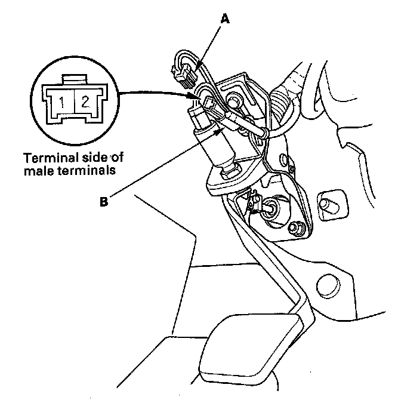
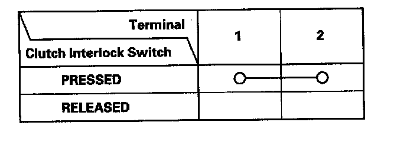

Clutch Switch: Testing and Inspection
Clutch Interlock Switch Test
1. Disconnect the clutch interlock switch 2P connector (A).
2. Remove the clutch interlock switch (B).

3. Check for continuity between the terminals according to the table.
- If the continuity is not as specified, replace the clutch interlock switch.
- If OK, install the clutch interlock switch, and adjust the pedal height.